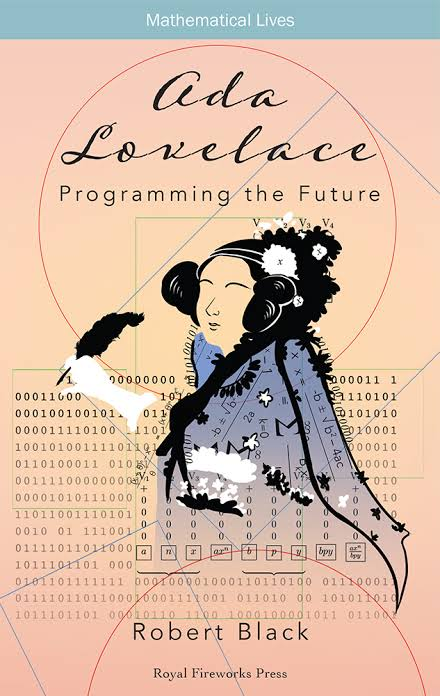

In 1833, when Ada was just seventeen years old, she was introduced to Charles Babbage, a brilliant inventor and mechanical engineer. Babbage was famous for designing the Difference Engine, a massive machine designed to calculate and print mathematical tables. Ada was absolutely captivated by his work. She visited him frequently to see his machine and later attended his famous Saturday evening parties, which were filled with scientists, writers, and artists.
The "Enchantress of Numbers": Babbage was very impressed by Ada's sharp mind. He realized she was not just a casual observer, but a true mathematician. He affectionately nicknamed her the "Enchantress of Numbers" because of the graceful and imaginative way she wrote about mathematics. While other scientists saw Babbage's machines as mere calculators, Ada saw them as tools that could one day manipulate symbols, letters, and even compose complex music. She brought a poet's imagination to a mathematician's machine.

Another portrait of Ada Lovelace in her later years.
Their relationship evolved into a powerful intellectual partnership. Babbage became her mentor, and Ada became his most enthusiastic and capable interpreter. They corresponded for years, discussing deep scientific and mathematical concepts. When Babbage moved on to designing his much more advanced Analytical Engine, he knew that Ada was the only person who truly understood the immense potential of his vision.